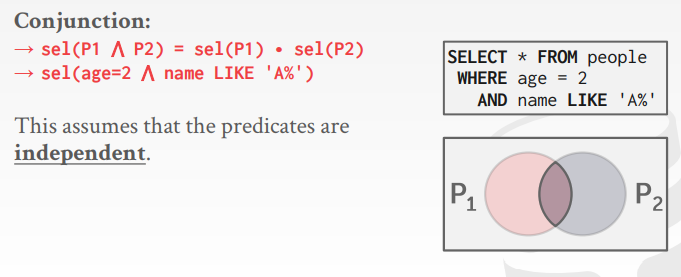

Backround
上节课说的是基于规则的优化器，而本节课要说的就是基于代价模型的优化器
基于代价模型，估计每个计划的好坏
然后从众多执行计划中，选取一个性价比最高的执行计划
Cost model components
代价估算的三个方向：
Choice 1：Physical costs
物理代价（例如：需要多少CPU的计算，多少次IO，多少次miss cache，读取内存的开销，预取数据的开销）
极度依赖于硬件的性能（更换硬件环境，估算的代价标准都会有变动）
这种估值方案经常出现在数据库一体机上（例如：Oracle，因为硬件是不变的）
或者SQL Server上，主要是Windows对硬件的性能有较深的把控
一般是商用的会做的比较细，开源的一般不会
Choice 2：Logical costs
逻辑开销，估算每个算子的开销
开销的计算和每个算子之间是独立的
需要数据的统计信息（比如分布之类的），以便知道算子处理多少数据，从而估计开销
Choice 3：Algorithmic costs
比较细的估计算子的开销，从算法的层次去估计开销
例如：join，具体分为几个步骤、每个步骤的时间复杂度是多少
Statistics
而上述的三个方面，则非常依赖于DBMS中数据的统计信息
因为针对不同的算子，只有知道该算子需要处理多少条数据，才能够准确的算出它的开销是多少
不同数据库更新其统计信息的方法，是不同的：
NR，V（A,R），SC（A,R）
R：数据表的表名
A：数据表的某一列的列名
NR：当前的数据表中有多少条数据
V（A,R）：在当前数据表R的某一列A中，有多少个不同类型的值（比如性别一列，就只有男或女，这两种值）
SC（A,R）（全称：selection cardinality）：对于当前的选取方式，选取的基数是多少
计算公式：NR/V（A,R）（计算的前提：是数据为平均、均匀分布的）
在当前的选取方法中，平均每次选取能够得到多少个值
对于这一列每一个单独的值，如果选取这个值，平均每次能获取到多少个值
比如在性别一列中，总共有50个男性和50个女性，那么此时选取出男性的基数就是50个
Logical costs
基于以下几种不同的情况，来分析SC（A,R）
情况一
针对数据表中的某一主键列，列上的数据都是唯一的
在这种情况下，选取基数（SC（A,R））要么是1（存在且只存在一个），要么是0（不存在）

情况二
但如果是范围的选取，比如说要选取某一列中<1000的数据，或是多谓词选取，那么这个时候就无法用SC（A,R）进行衡量
由此需要引入选择率的新概念

Complex predicates
针对复合谓词的选择，提出新的概念：选择率
选择率，对于当前的谓词，在总数据中能够选取出多少个数据，这个概率就是选择率
然后可以根据每个谓词的选择率，计算当前这种方案下总体的选择率
以下的例子都假设总共有五个数据，分别是0、1、2、3、4
并且，都假设数据是均匀分布的
Equality predicates
针对相等谓词，此时的计算公式是SC（P）/NR
- 针对当前给定的谓词组合P，在当前数据表中平均能够找到SC（P）个
- 而总共有NR个数据，因此相等谓词的选择率便是SC（P）/NR

Range predicates
范围谓词的查找
PS：下图中Amax是指当前列数据中的最大值，Amin是当前列数据中的最小值

Negation query
不等于谓词的查询

Conjunction
这里，可以将数据的选择率和概率作为替换
因此。针对多谓词并联（求并集）的复合查询，就可以用概率的相乘获得选择率（因为二者的概率是互不干扰，独立的）
PS：使用这种计算方法的前提：两个查询谓词之间，是互不干扰，相互独立的
Disjunction
而如果是要求谓词筛选后的并集，可以参考离散数学的做法
PS：使用这种计算方法的前提：两个查询谓词之间，是互不干扰，相互独立的
Result size estimation for joins
前面说的主要是基于谓词的查询，而如果涉及到两个表的join，情况会更加麻烦
比如说，我们很难知道两个表join后得到的数据有多大
- 因为可能没有（join后发现数据都不匹配）、可能很小、也可能很大、无法估计大小
因此，为了研究这个问题，假设内表中所有的数据都能够和外表进行匹配
为了两个表join后得到的数据量是多少，给出以下的计算模型：
NR是指R表的数据量
NS/V（A,S）其实就是SC（A,S），即针对每个取值，平均能够给出多少个数据
二者相乘，就代表对于NR来说，每个数据都能在S表中匹配上，而每个匹配上的数据，在S表中有SC（A,S）条
二者相乘之后，得到的结果就是两表join后的总结果的数量
而，因为join是符合交换律的，所以可以交换两边表的位置，因此在选取最终在选取结果的时候
往往是选择总开销较小的那个，也就是被除数较大的那个

Selection cardinality
此前的推断过程，都是基于以下假设进行推断的：
Assumption 01:uniform data
假设数据的分布都是均匀的
Assumption 02:independent predicates
假设在查询的过程中，每个谓词的查询之间，是相互独立的
- 因此此前在并联谓词查询的时候，可以简单的用概率相乘得到结果
Assumption 03:inclusion principle
此前在join中的假设，假设A表中的每个数据都能够在B表中找到
Correlated attributes
实际上，此前做出的很多分析都是基于上述三个假设
而如果没有三个假设，在估算代价上，就会有很多出入

比如这里，针对makes和models两条列，希望找到make=“honda”和model=“accord”的数据
如果基于此前的三个假设，那么1/10 * 1/100 = 0.001即答案
而只要稍微对数据加以了解，就会发现，model=“accord”的，就只能是make=“honda”的
也就是说这二者，是一一对应的关系
那么实际上的概率应该就是1/100 = 0.01
也就是此时的推断出现了问题（问题出在，两个谓词的查询之间，从数据的角度来说是不独立的）
因此，需要一些其他的方式，在不遵守上述三个假设的情况下，对数据进行预估
Cost estimations
基于数据不均衡的情况，需要新的方法或是指标，来衡量当数据不均衡的情况
最开始的思路，最简单粗暴的想法，在统计信息中，对于一列的数据，记录不同种类的数据的具体情况

但是，这种方法的问题是，可能会花费大量的空间来存储数据
因此需要对统计信息的存储进行优化，即用直方图来存储数据信息
Equi-width histogram
等宽直方图，把相等宽度的值域打包成一块（比如说每三个坐标列打包在一起）
这样记录的就不是每一块的数据量，而是以bucket为单位的记录一个范围内的数据量
但是，这种等宽直方图的缺点就是，信息丢失率比较高
- 比如说10、11、12这一块，当数据进行打包处理以后，可能总值很高，但11的位置其实只有少量的数据
- 而当使用这种方法的时候，很可能会误判在11的位置上有大量的数据
- 也就是说，在块内的数据范围会因此被掩盖，从而造成误差
- 因此需要引入等高直方图


Equi-depth histogram
要求每个bucket里面的数据总量是相同的
- 比如说要求每个bucket里面要有15个数据，那么第一个bucket可能包含1-5的数据，第二个bucket包含6-8的数据

一方面，可以节约内存；另一方面，可以解决数据缺失、数据误差的问题，从而提高精确度

Sketches
并不记录该数据是否存在，而是从概率的角度来估计该数据是否出现以及出现的数量
- 即，从概率的角度来分析数据出现的数量以及概率
主要有以下两个方法：
PS：Redis使用的是hyperloglog（记录当前数据的hash值中第一个1的位置，通过这种方式来记录数据在数据表中有多少个）
Sampling
另一种思路：采样
主要思路就是，先从原有的数据表中采样一部分数据出来（简称为小标），然后将选出来的执行计划在这个小表里面执行一遍
从而推断该执行计划，在原有的大表里面可能会执行多久
优点：是基于真实的数据进行估计的，不会有太大偏差
缺点：
- 不光要维护原有的数据表，还要额外的空间来维护小表
- 如果采样得到的数据被删除了，那么小表还需要维护数据
- 同一条SQL需要在大表和小表上同时执行，浪费资源
Observation
有了直方图，概率统计以及采样估算等方法，便可以轻松的估计数据的分布，从而了解谓词的实际代价消耗
而在了解了执行计划的具体代价之后，那么就需要列举不同的执行计划，估算不同执行计划的消耗，从而选出最优的方案
Query optimization
对于一些只涉及一个表的查询，只需要基于规则的启发手段便可以实现
而针对多表查询，涉及查询循环的嵌套，是基于规则的优化器无法实现的
Single-relation query planning
针对单表的查询，可以直接根据基于规则的去选取最优的方案
比如说数据表的扫描，是选择顺序的读取数据页，还是二分查找，还是走索引（可以直接写一些规则，有索引走索引，没索引就二分）
这种简单的启发式的方案，对于大多数的OLTP的业务，都是比较适用的
- 在单表的查询中，可以无视基于代价开销的优化，有索引就走索引就行了
OLTP query planning
在OLTP的查询优化中：
- 使用启发式的手段，选择一个最佳的索引就好了
- 在join的操作过程中，往往只需要从A表中获取少量数据，然后把数据连接到B表中就可以了

Multi-relation query planning
多表连表查询
- join是符合交换律和结合律的，因此如果有多个表进行join，那么就会有很多种不同的执行计划
- 也就是有很多的计划排列组合，那么就需要对其进行剪枝
此前的System R只研究left-deep tree，即只研究左深树
- join的左子树可以是表，也可以是join
- 但，join的右子树必须是一个表
并且，这种左深树还有优点，能够很好的适应执行模型中的火山模型
- A表和B表join完了以后，可以向上吐出一条数据，这条数据再和C表进行join，又可以向上吐出一条数据（而其他不是左深树的情况，则需要用额外的空间存储中间结果）
- 也就是可以将模型做成流式模型，极大的降低结果集的大小

然后，需要做一些计划列举的方式：
比如说通过排列组合，比较不同的左深树的方案
或者说，比较不同的算子实现方式（hash join，nested loop join等）
再或者说读取数据的方式，比如说是全表扫描，还是索引扫描
而，如何列举出这些方案的优劣，一般使用的是动态规划的算法来实现的

Dynamic programming
在join中，不同的join方案，对应的开销是不一样的
如果需要找到最佳的方案，常用的方法便是动态规划算法
比如这里有两种不同的join方案，而每个方案，又分为hash join和sortmerge join两种方法
如果使用动态规划算法，那么就需要两种方法都走一遍，最后得到的结果进行比较
而在每种方法内部，每次都是“贪心算法”，取最小开销的那个方法


Candidate plan example
举例说明如何对不同的执行计划进行剪枝比较
Step 1: Enumerate relation orderings
排列组合出多个不同的左深树

Step 2: Enumerate join algorithm choices
列举算子join不同的实现方案

Step 3: Enumerate access method choices
再列举不同的读表方式（顺序读表还是索引读表）

最后，再列举所有方案的开销，选出开销最小的方案
Postgres optimizer
在PG里面的优化是如何实现的：
- 不仅有左深树，还有右深树，以及二者混合的类型
- 在评估方案的好坏上有两种实现方法：动态规划（如果连表的数量小于12就用DP）和基因遗传算法（如果连表的数量大于12就用GEQO）
PG中的遗传算法的主要思路：
先预设几个组合方案
删除此时效果最差的方案
然后将当前最好的方案分裂（变异）出一个新的方案（繁衍）
接着不断地轮询上面的两个步骤，直到轮询次数达到上限

Conclusion
在看了那么多的基于开销的优化模型，一个非常重要的思路便是：尽早的将数据过滤
- 数据过滤的越早，后续在算子之间传输的数据就越少，开销也就越少
一些选择率的估计指标
- 数据在均匀的情况下
- 每个查询谓词相互独立的情况下
- join存在结果的情况下
- 如果数据不均匀，就需要直方图来解决
- 有两个表在数据内容上是高度相关的，那么就有一些数据库可以将这两个表关联起来，在计算它们的统计信息
动态规划依然是，在做join操作中比较不同join花费时，选取最优策略的最佳手段